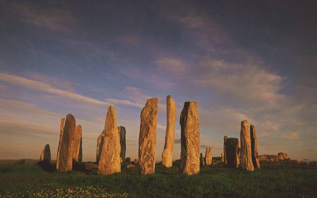

Callanish Stones
Isle of Lewis, Outer Hebrides, Scotland

A stone circle with a tall central monolith and rows of standing stones radiating in a cross shape, set up between 2900 and 2600 BC and used for ceremonies through the Neolithic and Bronze Age. 1
Open in the interactive Watcher
Sources
- Callanish Stones Wikipedia